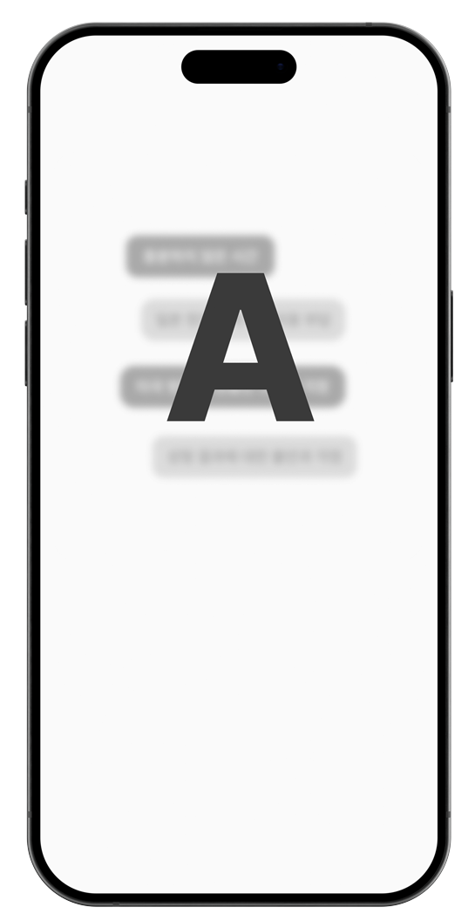
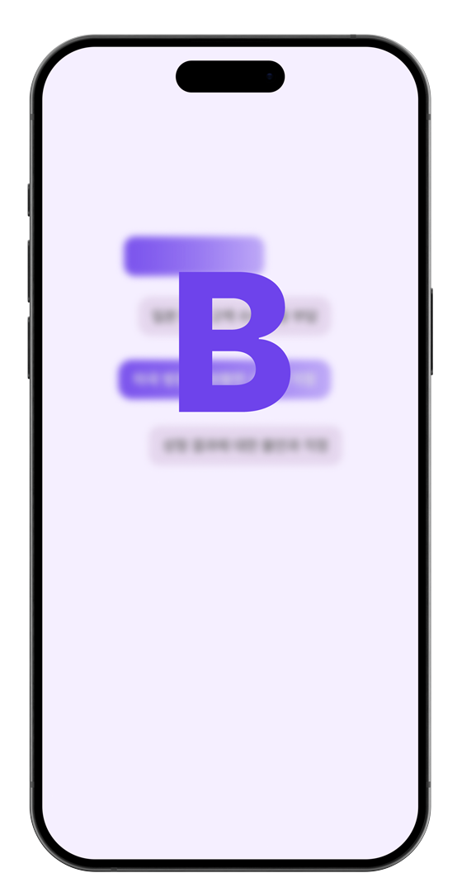

ちょっと、キレイになってくる！ Better Me.

ちょっと、キレイになってくる！ Better Me.
ちょっと、キレイになってくる！ Better Me.
Message ベターミーが伝えたいこと
すぐそばにキレイ旅
ベターミー
日本から近い韓国では、最先端の技術を導入した
美容整形を含む医療を合理的な費用で受けることができます。
世界でも認められる技術を誇る韓国では、
各国の人々がひとりひとりに合わせた治療を受けています。
安心して韓国の美容外科および医療機関の
カウンセリングから治療、
ご帰宅まですべての
過程をベタ ーミーがご一緒いたします。
Serviceメインサービス
-
おうちで簡単
無料オンライン
お見積り！あなたに
ピッタリな病院
探しをお手伝い！韓国美容外科
オンラインカウンセリング初回無料すぐそばに綺麗な旅
Better Me. STEP 1オンラインカウンセリング -
ベターミーと一緒なら
韓国での言葉の壁は
気にしなくても大丈夫です！現地カウンセリングに専門通訳士が同行手術中に専門通訳士が同行 同行術後の回復室に専門通訳士が同行STEP 2医療通訳サービス -
緊急サポートが必要な場合
24時間日本語サポートを
ご利用いただけます。緊急サポートが必要な場合
24時間日本語サポートを
ご利用いただけます。病院関連お問い合わせ各種予約サービス薬局代行サービスレストラン関連緊急日本語サポートサービス観光地関連お問い合わせSTEP 324時間相談サービス -
帰国後もアフターケアを
しっかり管理します。多数の日本の美容外科と提携し、帰国後のケアサポート可能アフターケアサービス術後のケアキットSTEP 4アフターケアサービス
With Better me ! カウンセリングから アフターケアまで一度に
治療科目のご案内 Medical Subject
ご希望の施術科目をお選びください。

ご希望の
商品をお選びください。
プロモーション価格
初めての相談1回のみ
相談1回のみプロモーション適用。
治療科目1つ当たり(税込み)
治療科目1つ当たり(税込み)
Online Counseling
このような方に
適しています。
診療決定前に医師と詳しい対面相談を受けたい方
韓国スタイルの診療が気になる方
診療決定前に対面相談及び韓国観光を楽しみたい方
サービス紹介
韓国病院の対面相談日程調整
韓国病院の対面相談日程確定
韓国病院の相談時に専門通訳が同行
(1件基準(基本提供 90分) / 1件(60分)を追加する場合、5,000円追加)手術時の病院同行+通訳サービス
整形手術証明書発行代行
送迎サービス(別途有料サービス)
(空港 > 宿舎 / 宿舎 > 空港 / 病院 > 宿舎など)提携宿泊施設案内及び予約サービス
レストラン案内及び予約サービス
観光施設案内及び予約サービス
Standard
このような方に
適しています。
診療決定前に医師と詳しい対面相談を受けたい方
診療決定前に対面相談及び韓国観光を楽しみたい方
診療決定前にあらかじめ韓国の病院過程を直接体験したい方
サービス紹介
韓国の病院で相談日程を調整
韓国病院の相談日程が確定
韓国病院の相談専門通訳が同行
(1人基準(基本提供90分) / 1件(60分)を追加すると、¥5000追加)手術時、病院同行+通訳サービス
(1件基準(基本提供120分)現場決済時、¥15000追加)整形手術の証明書発行代行
ピックアップサービス(別途有料サービス)
(空港>宿泊施設/宿泊施設>空港/空港>病院/病院>宿泊施設など)宿予約サービス
食堂の案内や予約サービス
観光施設案内および予約サービス
プロモーション価格
初めての相談1回のみ
相談1回のみプロモーション適用。
Online Counseling
このような方に適しています。
診療決定前に医師と詳しい対面相談を受けたい方
韓国スタイルの診療が気になる方
診療決定前に対面相談及び韓国観光を楽しみたい方
サービス紹介
韓国病院の対面相談日程調整
韓国病院の対面相談日程確定
韓国病院の相談時に専門通訳が同行
(1件基準(基本提供 90分) / 1件(60分)を追加する場合、5,000円追加)手術時の病院同行+通訳サービス
整形手術証明書発行代行
送迎サービス(別途有料サービス)
(空港 > 宿舎 / 宿舎 > 空港 / 病院 > 宿舎など)提携宿泊施設案内及び予約サービス
レストラン案内及び予約サービス
観光施設案内及び予約サービス
治療科目1つ当たり(税込み)
Standard
このような方に
適しています。
診療決定前に医師と詳しい対面相談を受けたい方
診療決定前に対面相談及び韓国観光を楽しみたい方
診療決定前にあらかじめ韓国の病院過程を直接体験したい方
サービス紹介
韓国の病院で相談日程を調整
韓国病院の相談日程が確定
韓国病院の相談専門通訳が同行
(1人基準(基本提供90分) / 1件(60分)を追加すると、¥5000追加)手術時、病院同行+通訳サービス
(1件基準(基本提供120分)現場決済時、¥15000追加)整形手術の証明書発行代行
ピックアップサービス(別途有料サービス)
(空港>宿泊施設/宿泊施設>空港/空港>病院/病院>宿泊施設など)宿予約サービス
食堂の案内や予約サービス
観光施設案内および予約サービス
治療科目1つ当たり(税込み)
HOW TO USE ご利用案内
ご出発前
ベターミー(better me)の
オンラインカウンセリングで
あなたにピッタリな病院を見つけましょう。
ご到着後
24時間緊急
日本語サポートシステムで
安心してお過ごしください。
ご帰国後
帰国後に必要に応じて
日本の提携病院で抜糸などの
アフターサービスを受けられます。
Safety Support 安心のセキュリティ
厳格な顧客プライバシー管理
国際ISO情報保護と韓国ISMS認証に準拠し、
信頼性の高いAWSベースの環境でサービスを提供し、
ベレルミ元従業員は秘密保持誓約を通じて
お客様の個人情報を厳密に管理します。
正式な医療観光誘致機関
⌜医療海外進出および外国人患者誘致支援に関する法律⌟
第6条第3項及び同法施行規則
第5条第3項、第2号によると、
外国人患者誘致業者として正式に認証された機関です。
厳選された韓日連携病院リスト
厳格な自社基準（無事故、内・外国人診療数が同一病・医院、徹底したセキュリティシステムなど）へ
適格厳選された韓日連携病院のみを紹介します。
FAQ よくある質問
-
Q. ベタミとは何ですか？A. ベタミは外国人に韓国クリニックおよび医療サービスに関する信頼できる医療情報を提供し、これを基に韓国行きを決心した方に便利な相談および診療まで続けられるようにするサービスです。
-
Q. どうやって利用するんですか？A. ベータミーの公式ラインアカウントを友達追加してお問い合わせいただくか、公式ホームページの右下にあるオンライン相談をご利用ください。
-
Q. オンライン相談は誰がしてくれるんですか？A. ベータミーは医療機関ではないので、厳格な基準に基づいてベータミーと提携している医療機関の医師が相談を進めます。
相談時に写真を添付するかどうかは自由ですが、ご案内した規格に合わせて詳細な写真を添付していただくほど、詳しく正確な相談が可能です。 -
Q. 長期間韓国滞在が不可能な場合はどうすればいいですか？A. 診療科目や内容によっては、当日治療が可能な科目もあり、日程がぎりぎりの場合は、当日診療だけ受けた後、帰国し、日本地域の提携病院で追加の後続治療を受けることができます。
-
Q. 公式オープンはいつですか？A. 現在、ベータミーはベータサービスを運営しており、2025年上半期に公式サービスを導入する予定です。
キレイへの近道
-
Online consultation オンライン相談
-
Estimate comparison 見積もりの比較
-
Medical interpretation 医療通訳
-
Hospital appointment 病院予約
-
Lodging reservations 宿泊施設の予約